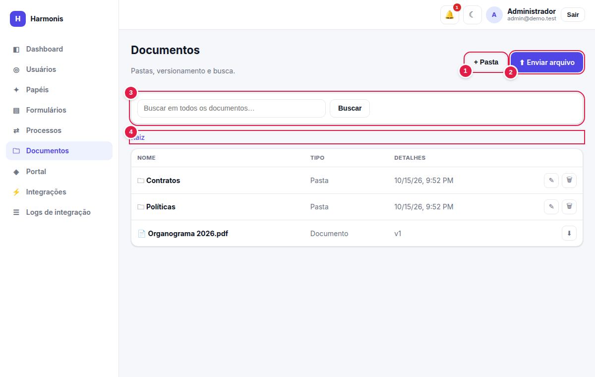
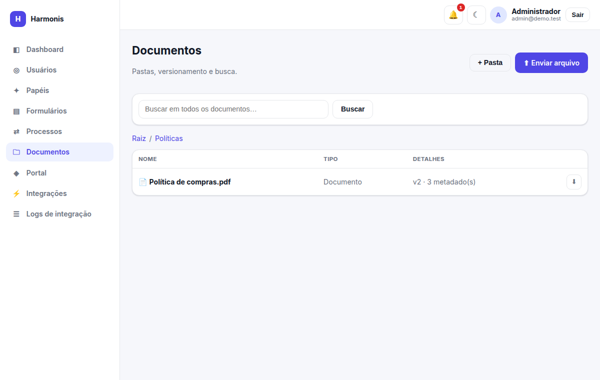
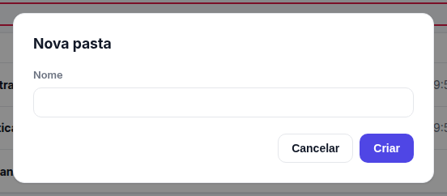
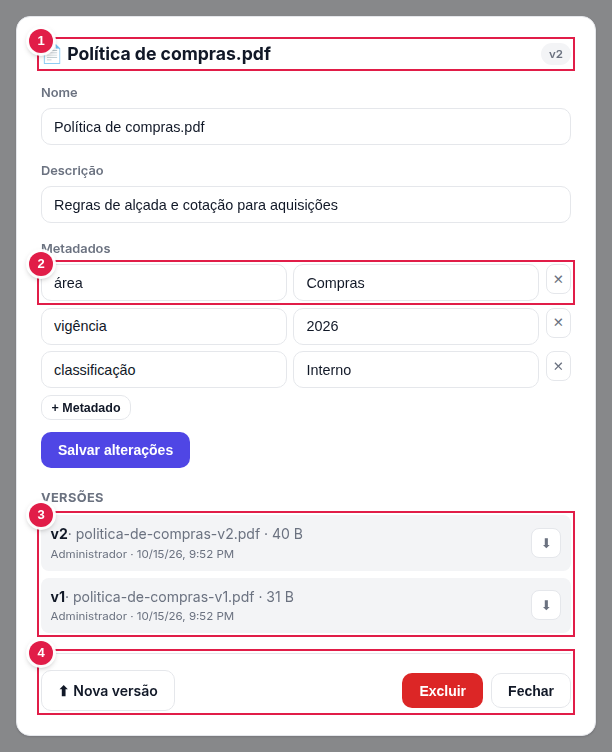

Documentos (GED)
Gestão eletrônica de documentos: pastas hierárquicas, versões que preservam o histórico, metadados e busca em toda a base.
Ver e baixar: documents.view · enviar arquivos, criar pastas e novas versões: documents.create ·
renomear pastas e editar dados do documento: documents.update · excluir: documents.delete.
Navegando

- + Pasta — cria uma pasta dentro da pasta atual.
- ⬆ Enviar arquivo — envia um arquivo para a pasta atual (abre o seletor de arquivos do computador).
- Busca — procura em todas as pastas (veja Busca).
- Caminho (breadcrumb) — mostra onde você está; clique em Raiz ou em uma pasta para voltar.
A tabela lista primeiro as pastas (🗀) e depois os documentos (📄). Colunas: Nome, Tipo (Pasta ou Documento) e Detalhes — data de criação para pastas; para documentos,
a versão atual (v2) e quantos metadados possuem. Clique no nome de uma pasta para abri-la, ou no de um documento para ver o detalhe. O ícone ⬇ baixa a versão atual.

Pastas
| Ação | Como fazer | Detalhes |
|---|---|---|
| Criar | + Pasta → informe o Nome → Criar (ou Enter). | Pastas podem conter outras pastas, sem limite de níveis. |
| Renomear | ✎ na linha da pasta → digite o novo nome. | documents.update |
| Excluir | 🗑 na linha da pasta → confirmar. | Pergunta: “Excluir a pasta ‘X’ e todo o conteúdo?”. Remove subpastas e documentos (e seus arquivos físicos). documents.delete |

Enviando documentos
- Abra a pasta de destino (ou fique na raiz).
- Clique em ⬆ Enviar arquivo e escolha o arquivo. O envio começa em seguida (o botão mostra Enviando…).
- O documento aparece na lista como
v1, com o nome do arquivo. Clique nele para ajustar nome, descrição e metadados.
- Tamanho máximo: 10 MB por arquivo.
- Qualquer tipo de arquivo é aceito.
- Os arquivos ficam em armazenamento privado e só são baixados por usuários autenticados — não existe link público.
Detalhe do documento

- Cabeçalho — nome e versão atual.
- Metadados — pares chave/valor livres (ex.: área = Compras, vigência = 2026). + Metadado acrescenta; ✕ remove.
- Versões — todas as versões, da mais recente à mais antiga, com nome do arquivo original, tamanho, quem enviou e quando. ⬇ baixa aquela versão específica.
- Ações — ⬆ Nova versão, Excluir e Fechar.
| Campo / ação | Descrição |
|---|---|
| Nome | Nome exibido do documento (pode diferir do nome do arquivo). |
| Descrição | Texto livre sobre o conteúdo. |
| Metadados | Chave e valor. Entram na busca. Linhas sem chave são ignoradas. |
| Salvar alterações | Grava nome, descrição e metadados (documents.update). Sem essa permissão, os dados aparecem somente para leitura. |
| ⬆ Nova versão | Envia um novo arquivo para o mesmo documento: a versão atual passa a v2, v3… e as anteriores continuam disponíveis para download (documents.create). |
| Excluir | Remove o documento e todas as versões, inclusive os arquivos no servidor. Pede confirmação. (documents.delete) |
Em vez de enviar “Contrato_final_v2_revisado.pdf” como um novo documento, abra o documento existente e use Nova versão: o histórico fica junto e todo mundo vê sempre a versão atual.
Busca
Digite um termo na caixa de busca e clique em Buscar (ou Enter). A busca percorre todas as pastas e compara com:
- o nome do documento;
- a descrição;
- os metadados (chaves e valores);
- o nome original dos arquivos enviados.
O resultado lista Documento, Pasta onde está, Versão e o atalho ⬇. Clique no nome para abrir o detalhe; Limpar volta à navegação por pastas.
Ela usa apenas os dados cadastrais (nome, descrição, metadados e nome do arquivo). Para tornar um documento fácil de achar, preencha a descrição e os metadados.
Anexos de formulários não ficam aqui
Arquivos anexados às respostas de formulários ficam vinculados à resposta e são acessados em Respostas ou no detalhe do processo; eles não aparecem no módulo Documentos.